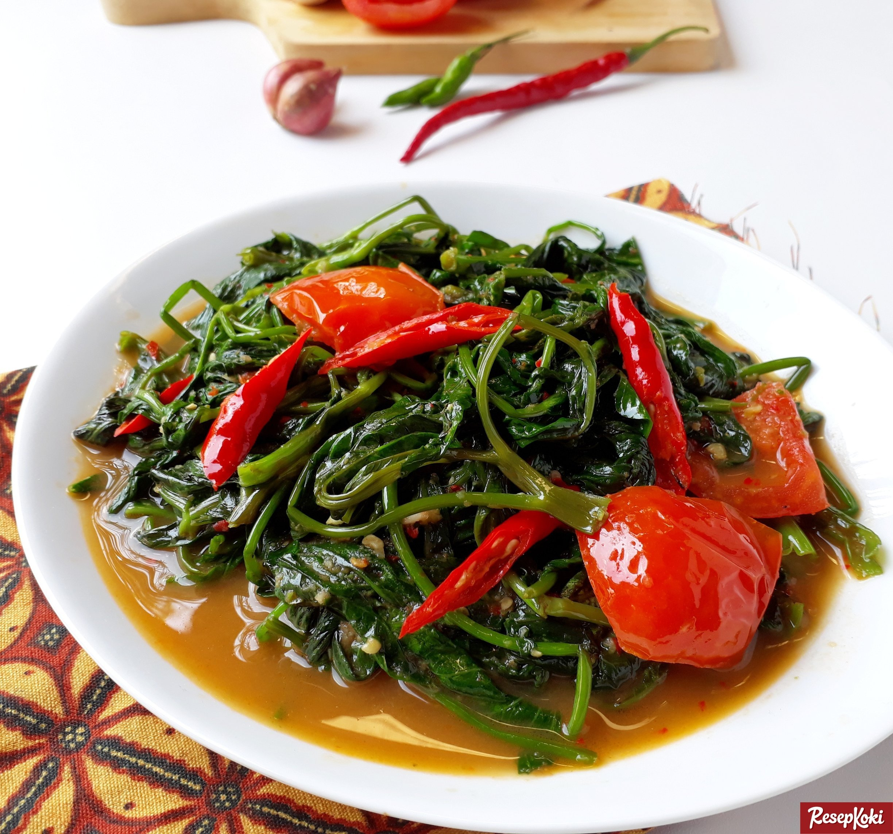

Tumis Kangkung

Resep Tumis Kangkung
Bahan:
- 1 ikat sayur kangkung segar (siangi, buang batang)
- 1 buah tomat ceri (belah empat)
- 4 siung bawang putih (memarkan)
- 2 siung bawang merah (iris tipis)
- 4 buah cabai rawit (iris serong tipis)
- Kaldu ayam bubuk (secukupnya)
- Garam (secukupnya)
- Gula (secukupnya)
- Margarin (secukupnya, pengganti minyak)
- Udang goreng (secukupnya, jika suka)
Cara Membuat:
- Panaskan margarin hingga leleh, tumis bawang putih, bawang merah dan cabai hingga harum serta matang.
- Masukkan sayur kangkung, aduk rata.
- Tambahkan garam, gula, kaldu ayam bubuk dan buah tomat serta udang goreng.
- Aduk rata semua bahan, masak dengan api besar agar kangkung cepat matang dan tidak berubah warna.
- Angkat tumis kangkung yang telah matang, sajikan selagi masih hangat.
Nah gimana simple kan? selamat mencoba!